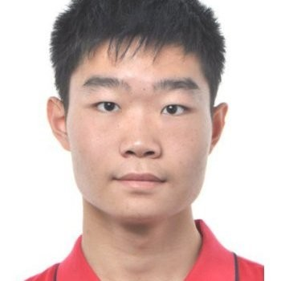
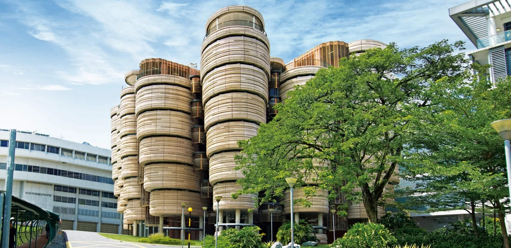

Welcome to my personal corner of the web. Born and raised in China, built and matured over a incredible 12-year chapter in Singapore. Discover my academic journey at NTU, tech development passion, and the milestones that shape who I am today.
Explore My Life

Spending years walking through iconic spaces like *The Hive* shaped my perspective on innovation and continuous exploration. Here, academic rigour meets practical application.
Formative years filled with early education, cultivating foundational technical interests, and building cherished, unforgettable family memories with my parents.
Embraced a massive life transition. Stepped out of my comfort zone to pursue a global canvas of learning, growth, and independence in Singapore.
Immersed in advanced education frameworks at Nanyang Technological University. Developed core technical values, spent endless nights building frameworks, and explored state-of-the-art architectures.
A beautiful 12-year odyssey in Singapore. Transformed from an eager student into a skilled innovator with rich projects, deep local friendships, and a solid vision for tomorrow.
A timeline is nothing without the people who walked it with you. From late-night research sprints to exploring the vibrant food scenes of Singapore, my community keeps me grounded.
📷 Friendship Gallery Area
Upload group pictures with friends to complete this interactive space!